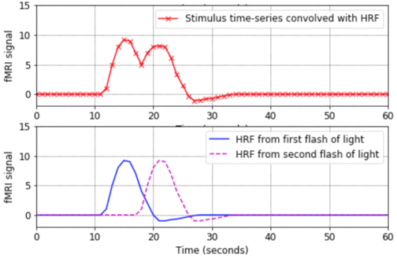
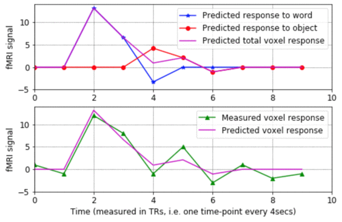
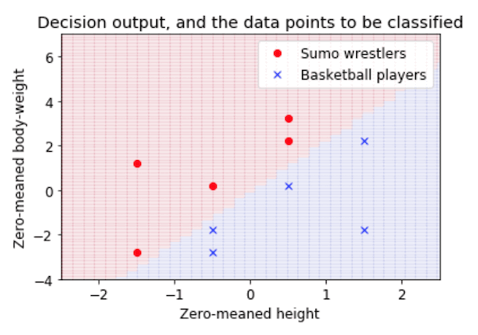

Raizada Lab
Some tutorial Python and Matlab programs for fMRI, pattern-based analysis and SPM
Here are some tutorial files that show how to use Python and Matlab for fMRI, including pattern-based analysis (also known as multi-voxel pattern analysis, or MVPA). Please feel more than free to use the code for teaching, and if you do, please mail me with comments and feedback.The code has lots of comments in it, which attempt to explain the concepts as explicitly as possible. No prior knowledge of Matlab or linear algebra is assumed.
The following tutorials illustrate standard fMRI analysis, i.e. modeling individual voxel time-courses using a General Linear Model (GLM):
-
hrf_tutorial.ipynb. That code is a live Python notebook, hosted on Google Colab, so it should run inside any web browser, without needing any additional software (i.e. you don't even need to have Python installed on your computer). - Matlab version: hrf_tutorial.m
- This program is a good place to start. It shows the basic shape of a Haemodynamic Response Function (HRF), how to convolve an HRF with a time-series of stimulus onsets in order to produce a predicted fMRI signal, and how to plot the results in Matlab. The program also shows what happens when closely-spaced stimuli produce HRFs which overlap in time and linearly sum.
-
math_of_convolution.ipynb (Live Python notebook, on Google Colab).
- Matlab version: math_of_convolution.m
- This program shows how convolution works, going through all the steps of exactly what gets added up and multiplied with what. It also explains from the ground-up how to do for-loops in Matlab. (By the way, if you want to see an example of how to "vectorise" code to avoid for-loops altogether, look at the bkprop.m program in my Matlab for neural-nets page).
-
design_matrix_tutorial.ipynb. (Live Python notebook, on Google Colab). - Matlab version: design_matrix_tutorial.m
- - This program shows what the rows and columns of a design matrix mean, how each column represents the predicted response to a given stimulus condition, and how the design matrix gets used to estimate the sensitivity of a voxel to various stimulus conditions. The program walks step-by-step through the process of estimating the model parameters for a voxel's noisy fMRI-signal, making plots of the results along the way.
These next two tutorials show some approaches in pattern-based fMRI anaylsis:
-
classification_plane_tutorial.ipynb. (Live Python notebook, on Google Colab). - Matlab version: classification_plane_tutorial.m
- This is a very introductory tutorial, showing how a classification task (in this case, deciding whether people are sumo wrestlers or basketball players, based on their height and weight) can be viewed as drawing a decision boundary in a feature space. It shows how to plot the data, calculate the weights of a simple linear classifier, and see how the resulting classifier carves up the feature space into two categories.
- Note to PyMVPA users: Michael Hanke has very kindly ported this tutorial into Python and has included it in the examples section of the PyMVPA toolbox. The webpage describing it is here and the Python script is here.
- explore_kamitani_tong_pattern_based_fMRI.m - This tutorial is a bit more in-depth, and explores the ideas put forward in the important paper by Kamitani & Tong (2005). The code simulates a map of orientation columns in primary visual cortex, divides this simulated cortex into voxel-like chunks, and counts up how much tissue there is in each voxel which is tuned to particular orientations. It then shows how this coarse-grained measure can be used to decode which visual orientation is being presented, even when some noise is added to the activation map. I should emphasise that this code is simply inspired by the Kamitani & Tong study, and should not be thought of as in any way endorsed by those authors! You can download the original paper from the Tong lab website.
-
showing_brain_images_tutorial.m - Start with this
program. It doesn't assume any prior knowledge of Matlab. It shows
how to extract slices (axial, sagittal etc.) from a 3D volume
and how to plot them with the appropriate axes, colormaps,
and color-scaling.
-
overlaying_Tmaps_tutorial.m - This program
shows how to overlay a statistical map on top of an anatomical map.
It assumes that you've already worked through showing_brain_images_tutorial.m
You can see some more examples of showing brain images, this time
using the transparency properties of Matlab 6, in the program
put_into_same_voxel_space.m below.
The programs below are slightly more complicated, and use functions from SPM99. The code gives commented examples of how to do things like reading SPM images into Matlab, finding their origins, displaying overlays, and extracting parts of SPM plots.
- put_into_same_voxel_space.m - This program lets you put one image into the same voxel space as another image. E.g. you might want to extract a Brodmann area from the brodmann.img file that comes with MRIcro, and then put that set of 1x1x1mm voxels into the same voxel space as your functional data, which probably covers a smaller volume and has larger voxels. Then you can use the Brodmann area as an ROI to explore your functional results.
- grab_mip.m - This program grabs the "glass brain" Maximum Intensity Projection (MIP) from an SPM99 results plot, makes the voxels orange-ish instead of gray, and offers the option of saving the separate brain images into EPS files, which are good for distilling into PDFs or for loading directly into Adobe Illustrator. By the way, the EPS files are large (around 192K), but they shrink into nice compact 8K PDF files.